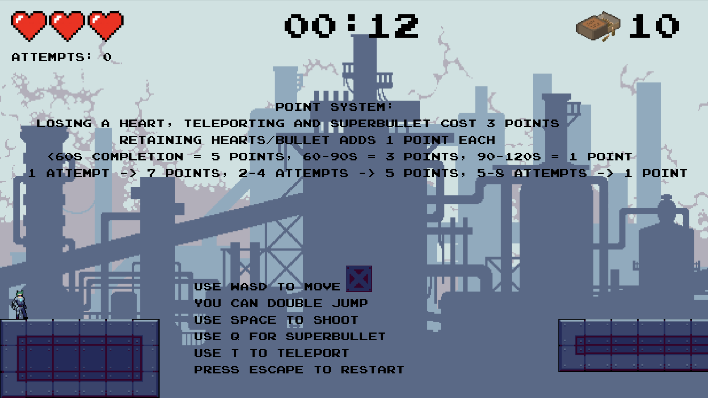
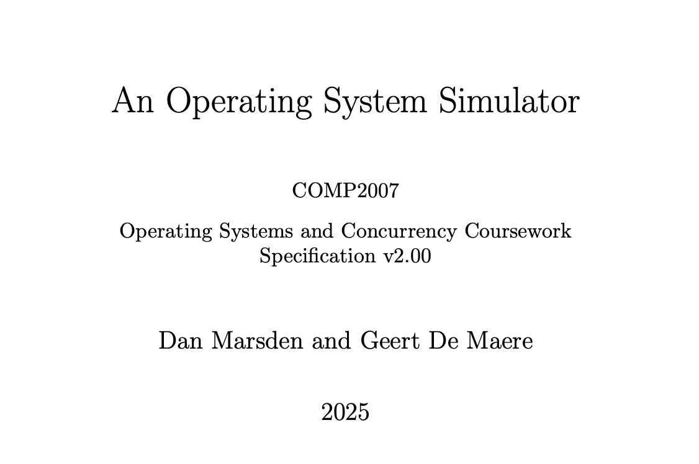
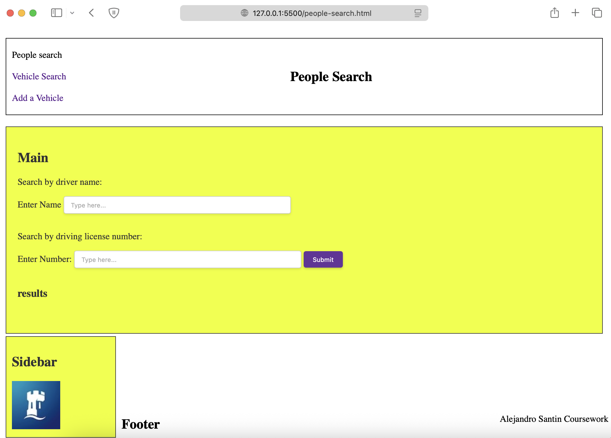
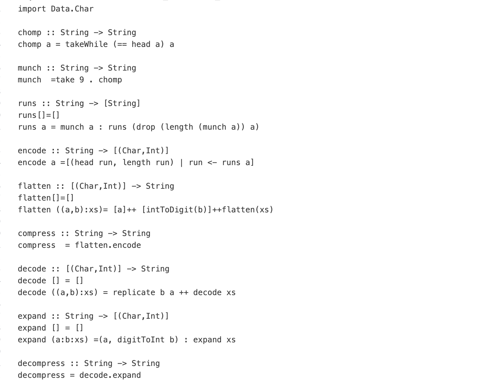
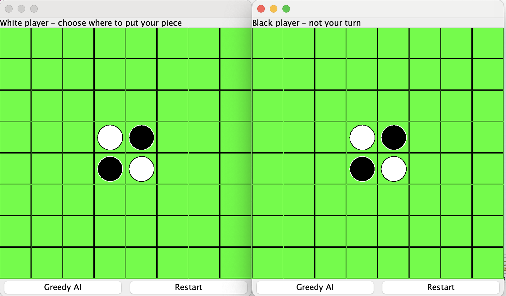
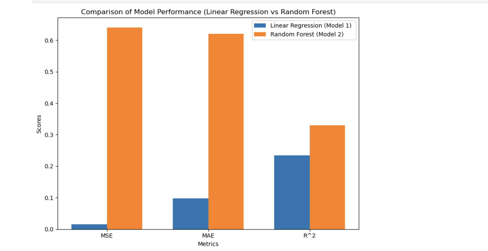

Welcome to my website
I am highly passionate about computer science and am currently studying this field at the University of Nottingham. I have developed proficiency in several programming languages, including Python, C, and Java, and have built a strong foundation in these areas. Additionally, I have gained experience with other languages such as Haskell, ARM assembly, and JavaScript, among others. I am keen to continue expanding my skill set and embrace new challenges that will allow me to apply my knowledge and grow professionally.
Software Maintenance & Evolution
Refactored a legacy Java Swing application into a modern JavaFX architecture using SOLID principles. Implemented automated testing with JUnit and Maven, while managing version control and CI/CD pipelines through GitLab.

Simulated OS
Engineered a multi-threaded simulator using POSIX threads to manage process scheduling and synchronisation. Developed thread-safe priority queues and a round-robin scheduler with dynamic priority boosting in a Linux environment.

Data Search Website
I developed the frontend of a website and connected it to the backend using a database through JavaScript. I used HTML, CSS, and JavaScript to link and manage the database. This experience helped me deepen my understanding of how websites function and how the frontend communicates with the backend.

Encryption / Decryption program
I developed a simple encryption/decryption program using functional programming principles in Haskell. This project provided me with a solid understanding of the Haskell programming language and allowed me to further refine my expertise in functional programming.

OOP Game
I successfully developed a two-player game using OOP, which also incorporated a GUI. Additionally, I implemented a simple AI that allowed the user to make calculated moves. This project helped me strengthen my OOP skills and provided valuable insight into implementing a more detailed and comprehensive testing phase for my code.

AI Pattern Recognition Software
Using imported Python libraries, I developed an AI that, given an input (in the form of a spreadsheet), could recognise patterns and make calculated predictions based on trends in the data, estimating where the data would likely go for different inputs. This project enhanced my understanding of data processing and AI learning.

ALU & ARM decode project
I developed an ALU for the 6502 CPU, which enhanced my understanding of the logic gates used in an ALU and how they work in unison to process arithmetic instructions and interact with other CPU components. Additionally, I created a program that decodes ARM instructions, identifying the instruction type, registers used and corresponding addressing mode by analysing the input bits, and presents the decoded instructions in plain English based on the ARM7TDMI manual.
Client & Server Project
Utilising Python, I developed a simple client-server system that successfully communicated across a network. This project enhanced my understanding of networking principles and how communication occurs between clients and servers within a network.
Mandelbrot in Assembly
I was tasked with implementing a code in assembly language to generate and output the Mandelbrot set for a given set of inputs. This project required me to dive deep into low-level programming, optimising the code for efficiency and ensuring that it accurately displayed the fractal for various input parameters. It was a challenging exercise that enhanced my understanding of both assembly language and the underlying mathematical principles behind fractals.
A python maths quiz
Over the years, I designed, coded, debugged, and conducted research to create an interactive mathematics quiz in Python, aimed at helping younger students with their revision. I used Object-Oriented Programming (OOP) to structure the code efficiently, ensuring modularity and ease of updates. For managing user data, I implemented hashing to store and retrieve information quickly, and utilised linked lists for dynamic question handling, allowing for easy modification of the quiz content. Additionally, I integrated SQL for storing user data securely, applying encryption techniques to protect sensitive information. This project not only sharpened my coding and problem-solving skills but also deepened my understanding of building robust, secure, and scalable educational applications.